だんどりー「ストーリーを作り直す」画面に、ストーリーでもコラージュを投稿できる新機能を追加する検討ボード。参考アプリ InSpic の選び方（枚数→レイアウト→セル編集）を、だんどりーのストーリー編集の文脈に落とし込んだ。モックの写真はすべて実際のツアー写真（Jennifer West 回・2026-11-24、秋葉原）で、画布はストーリー実寸 1080×1920（9:16）。
現行のストーリー編集は「形」の選択（日付を大きく／立ち寄り先つき／ありがとう系）＋主役写真1枚＋一文＋タグ付け。新機能はこの「形」の選択肢にコラージュ系を足すだけで、既存の3種はそのまま残す。コラージュを選んだときだけ、写真が1枚→複数枚になり、下の3ステップが開く。
一文・日付・タグ付けの入力欄は現行のまま流用する。コラージュ側は「写真の置き方」だけを担当し、文字要素はレイアウト側の決まった置き場に現行の値を流し込む。
まず写真の枚数を決める。選んだ枚数でレイアウト候補が絞り込まれる（InSpic の下段フィルタと同じ考え方）。だんどりーでは 2〜6 枚に絞る。
枚数ごとのテンプレートから1つ選ぶ。候補は各2〜3型に厳選し、迷わせない（全型は下の枚数別セクション）。
各セルに写真をはめ、セルごとに差替（別の写真に入れ替え）と範囲指定（ドラッグ／ピンチで見せる範囲を決める）を持つ。現行の主役写真の範囲指定を、全セルに広げた形。
本命は筆頭の「横長3段積み」。ツアー写真は横長（4:3・16:9）が大半で、段積みは横長写真をほぼそのままの比率で3枚並べられる唯一の型。
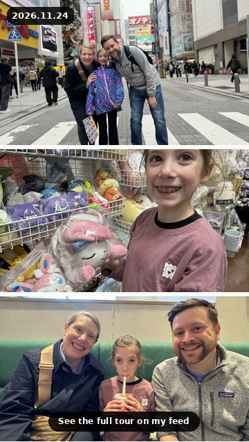
範囲指定各セルが 9:5.3 相当の横長枠。横長写真を上下のわずかな範囲移動だけで収められ、顔が切れにくい。範囲指定は「上下の寄せ」中心で効く。
一文・日付日付は最上段の左上にチップ重ね、一文は最下段の下にピル重ね（モックの形）。写真の段自体は汚さない。
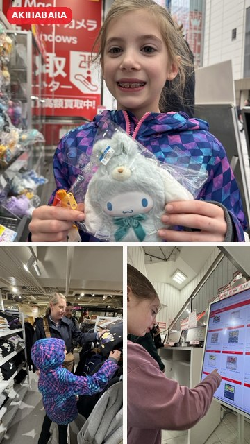
範囲指定上の主役セルは横長が活きる。下2セルは縦長寄りになるため、人物の寄り写真や看板など縦が効く写真向き。範囲は左右寄せ中心。
一文・日付上セルの上辺にエリアチップ（AKIHABARA等）、日付と一文は下段の境目に帯で置く置き場も可。
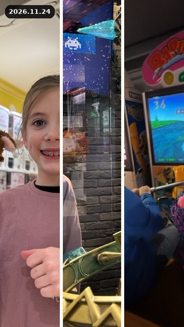
範囲指定各セルは細い縦長。横長写真は中央の一部分だけが残るため、範囲指定（左右スライド）が最も重要になる型。全身の立ち姿や縦看板には強い。
一文・日付日付は左列の上にチップ重ね。一文は置き場が狭く、下端に1行ピルが限界。文が長い回には不向き。
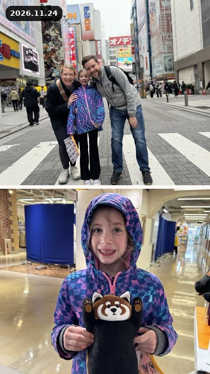
範囲指定各セルは 9:8 のほぼ正方形寄り。横長写真は上下が切れるため、範囲の上下寄せが効く。集合写真＋店内のような対の2枚向き。
一文・日付日付は上セル左上にチップ。一文は中央の境目に帯を置くと2枚を邪魔しない。
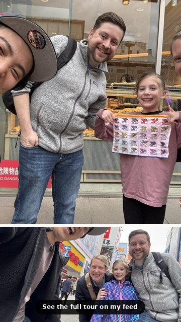
範囲指定上7割の主役セルは現行の1枚ストーリーに近い感覚で範囲を決められる。下帯は横に細長く、風景や店構え向き。
一文・日付一文は下帯の下端にピル重ね（モックの形）が自然。日付は主役セルの隅にチップ。
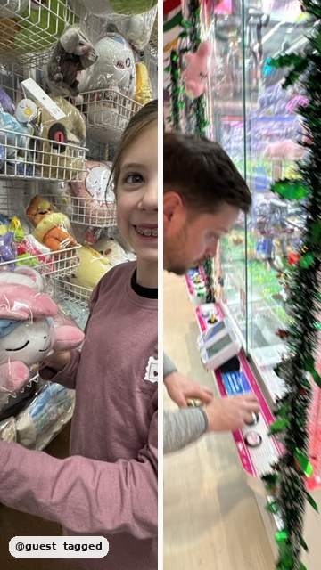
範囲指定縦長セル同士。横長写真は左右の範囲スライドが必須で、2人の人物を1人ずつ切り分けるような使い方もできる。
一文・日付文字の置き場は下端のみ。タグ付けチップを左下に置く形（モック）と相性がよい。
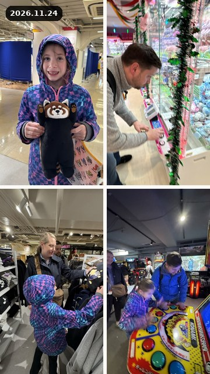
範囲指定各セルは 9:8。4枚とも同じ重みで並ぶため、範囲指定は「顔を枠内に入れる」調整が中心。時系列で左上→右下に並べると1日の流れになる。
一文・日付日付は左上セルの隅にチップ。一文は下端ピル。グリッドの規則性が文字を置きやすくする。
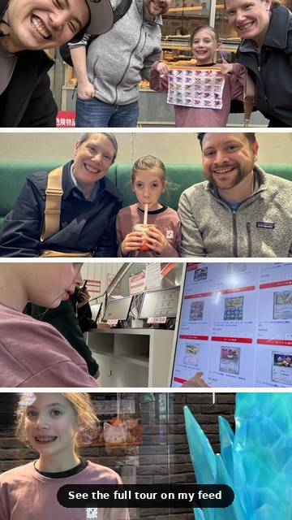
範囲指定各セルは 9:4 の細い横帯。横長写真の上下トリミング量が最も大きく、範囲の上下寄せが決定的に効く。パノラマ気味の風景・店内全景向きで、人物の顔アップには不向き。
一文・日付帯の合間に文字を差す余地はなく、日付チップ＋下端ピルのみ。
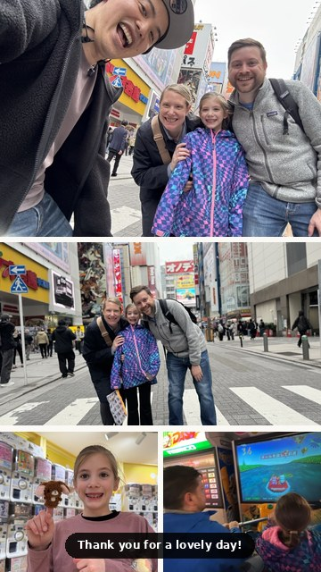
範囲指定上と中の横長セルが主役2枚を受け止め、下2セルは寄りの写真用。大きさに緩急があり「見せ場2枚＋補足2枚」の構成が作れる。
一文・日付ありがとう系と組み合わせやすく、一文（Thank youピル）は最下段に置く。日付は上セルの隅。
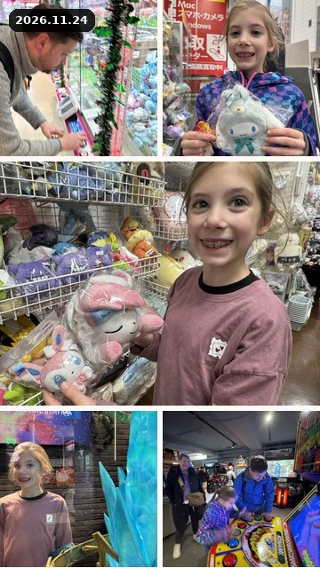
範囲指定中央のワイドセルが唯一の横長枠で、当日のベスト1枚を置く場所。上下の小セルは寄り写真で範囲調整は軽めで済む。
一文・日付日付は上段左上にチップ。中ワイドの写真に文字を重ねない設計で、一文は下端ピル。
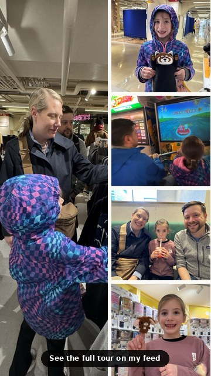
範囲指定左の縦長セルは全身写真専用に近い。右4段は細い横帯が続くため、右側は風景・小物の連なり向きで、範囲は上下寄せのみ。
一文・日付左セルの下端にタグ、一文は右下段に重ねるピルが置き場。日付チップは右上。
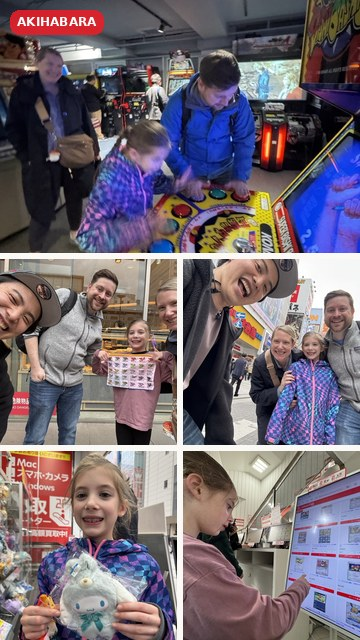
範囲指定上のワイドで集合写真を横長に受け、下4セルは場面の切り取り。5枚の中では範囲指定の自由度が最も高い構成。
一文・日付上ワイドの上辺にエリアチップ、日付はその横。一文は下端ピル。
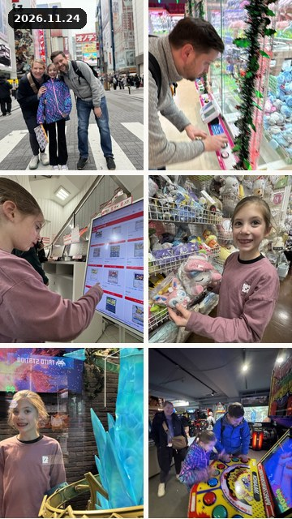
範囲指定各セルは 9:8 で均等。6枚すべてに範囲指定が要るため編集手数は最大。写真が多い回（家族回など）の総集編向き。
一文・日付日付チップは左上セルの隅。一文は下端ピル1行のみで、長い文は入らない。
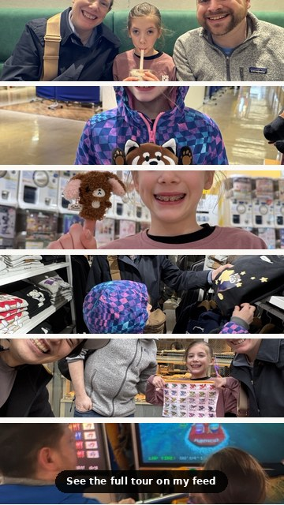
範囲指定各セルは 9:2.7 の極細帯。横長写真のごく一部しか見えず、範囲指定は「どの帯を切り取るか」の選択そのもの。映画のフィルムのような演出専用で、人物回には不向き。
一文・日付文字は下端ピルのみ。日付も帯に重ねると読みにくく、非推奨の置き場が多い型。
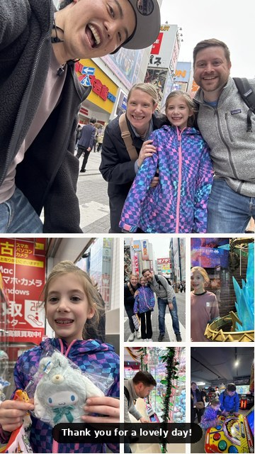
範囲指定上の大セルが主役、下は小セル5つのモザイク。小セルは範囲より「何を入れるか」の選抜が効く。主役1枚が決まっている回向き。
一文・日付ありがとう系と好相性。一文ピルは最下段、日付は上セルの隅にチップ。
| 順位 | 型 | 理由 |
|---|---|---|
| 1 | 3-A 横長3段積み | ユウキ本命。ツアー写真の多数派である横長写真が最も活き、セル編集（差替・範囲）の仕組みを最小構成で検証できる。まずこの1型でコラージュ基盤を作る。 |
| 2 | 2-A 上下イコール ／ 4-A 2×2グリッド | どちらも等分割で実装が単純。2枚は「あと1枚足したい」需要、4枚は1日の流れ需要に応える。基盤ができれば型の追加はテンプレート定義だけで済む。 |
| 3 | 3-B 上1＋下2 ／ 2-B 主役大＋下帯 | 主役＋補足の緩急型。集合写真を主役に置きたい回で 3-A と使い分ける。 |
| 4 | 5-C 上ワイド＋下2×2 ／ 6-C 上大＋下モザイク5 | 枚数が多い回の受け皿。編集手数が増えるため、自動はめ込み（顔位置の初期配置）の精度が上がってから。 |
| 見送り寄り | 3-C 縦3列 ／ 4-B 横4段 ／ 6-B 横6段フィルム | 横長写真の切り捨てが大きく、範囲指定の負担が最大。演出専用として将来の追加候補に残す。 |